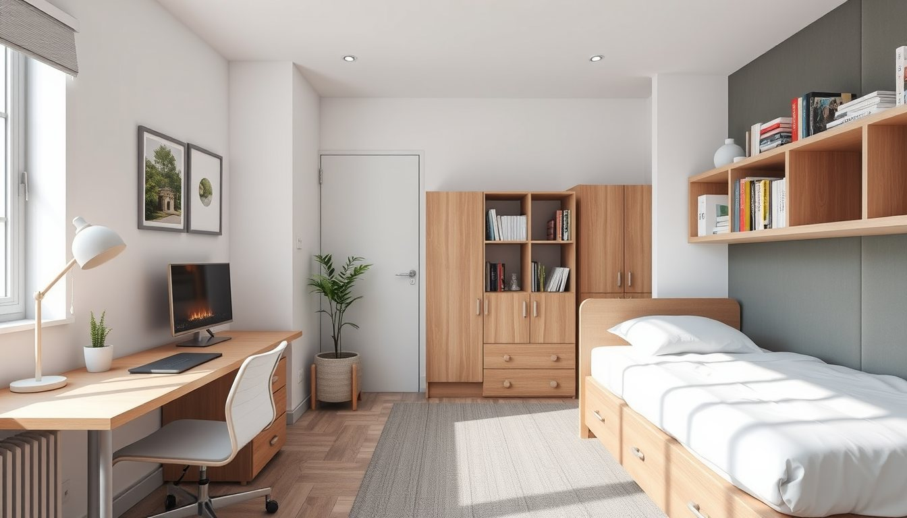
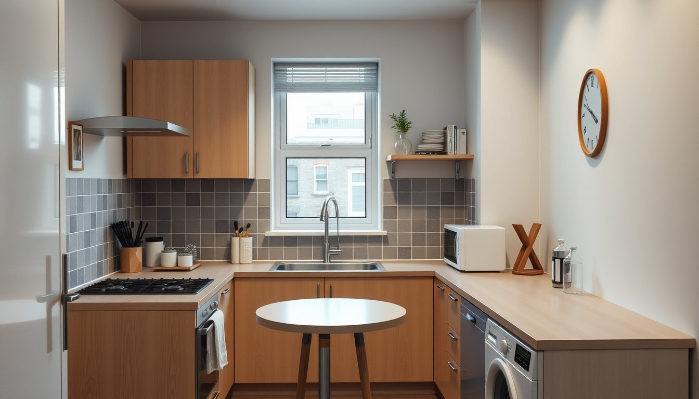
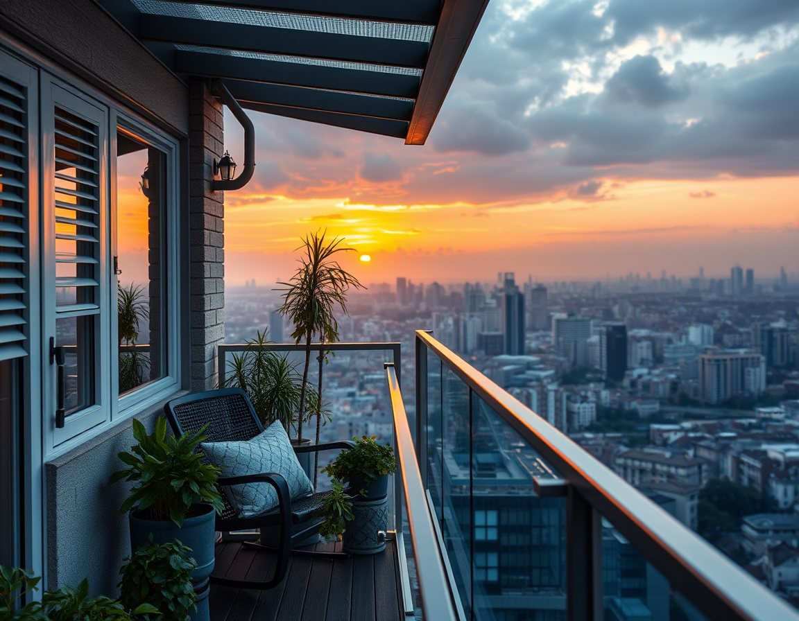
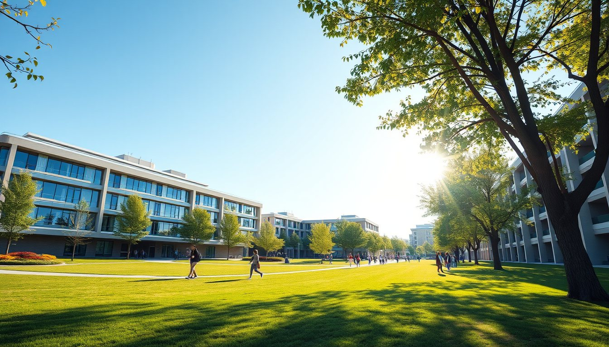

3 oda kaldıStüdyo 1+0
9.500₺ / ayEşyalıİnternet dahilAidat dahil
Tüm daireler eşyalı; internet ve aidat kiraya dahil. Depozito bir kira, sözleşme 10 ya da 12 ay.

3 oda kaldı
1 daire
Yeni
Evet, velinizden biri kefil olur. Sözleşmeyi WhatsApp üzerinden de hazırlayabiliyoruz.
Oda arayanlar listemizden aynı bölüm veya sınıftan arkadaş eşleştirmesi yapıyoruz.
10 aylık sözleşmede Temmuz–Ağustos kira alınmaz; eşyalarınızı depoda tutabiliriz.
Stüdyo dairelerde kedi kabul ediyoruz; depozito bir kira daha fazla.